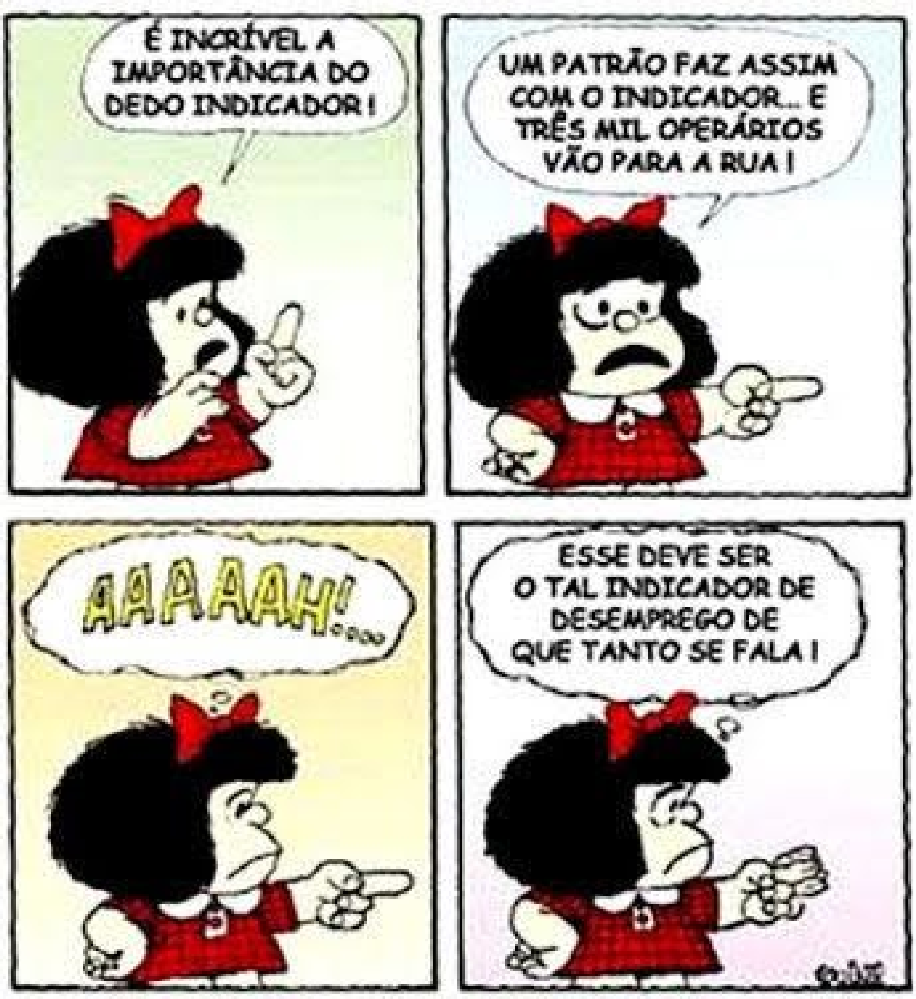

1.Adolescentes: mais altos, gordos e preguiçosos A oferta de produtos industrializados e a falta de tempo têm sua parcela de responsabilidade no aumento da silhueta dos jovens. “Os nossos hábitos alimentares, de modo geral, mudaram muito”, observa Vivian Ellinger, presidente da Sociedade Brasileira de Endocrinologia e Metabologia (SBEM), no Rio de Janeiro. Pesquisas mostram que, aqui no Brasil, estamos exagerando no sal e no açúcar, além de tomar pouco leite e comer menos frutas e feijão. Outro pecado, velho conhecido de quem exibe excesso de gordura por causa da gula, surge como marca da nova geração: a preguiça. “Cem por cento das meninas que participam do Programa não praticavam nenhum esporte”, revela a psicóloga Cristina Freire, que monitora o desenvolvimento emocional das voluntárias. Você provavelmente já sabe quais são as consequências de uma rotina sedentária e cheia de gordura. “E não é novidade que os obesos têm uma sobrevida menor”, acredita Claudia Cozer, endocrinologista da Associação Brasileira para o Estudo da Obesidade e da Síndrome Metabólica. Mas, se há cinco anos os estudos projetavam um futuro sombrio para os jovens, no cenário atual as doenças que viriam na velhice já são parte da rotina deles. “Os adolescentes já estão sofrendo com hipertensão e diabete”, exemplifica Claudia. DESGUALDO, P. Revista Saúde. Disponível em: http://saude.abril.com.br. Acesso em: 28 jul. 2012 (adaptado). Sobre a relação entre os hábitos da população adolescente e as suas condições de saúde, as informações apresentadas no texto indicam que:
2.
Mafalda é criação do cartunista argentino Quino. Menina precoce, serviu como porta-voz de seu criador nos tempos da Ditadura Militar argentina;
3.
A publicidade, de uma forma geral, alia elementos verbais e imagéticos na constituição de seus textos. Nessa peça publicitária, cujo tema é a sustentabilidade, o autor procura convencer o leitor a:
4.QUE VAI SER quando crescer? Vivem perguntando em redor. Que é ser? É ter um corpo, um jeito, um nome? Tenho os três. E sou? Tenho de mudar quando crescer? Usar outro nome, corpo e jeito? Ou a gente só principia a ser quando cresce? É terrível, ser? Dói? É bom? É triste? Ser: pronunciado tão depressa, e cabe tantas coisas? Repito: ser, ser, ser. Er. R. Que vou ser quando crescer? Sou obrigado a? Posso escolher? Não dá para entender. Não vou ser. Não quero ser. Vou crescer assim mesmo. Sem ser. Esquecer. ANDRADE, C. D. Poesia e prosa. Rio de Janeiro: Nova Aguilar, 1992. A inquietação existencial do autor com a autoimagem corporal e a sua corporeidade se desdobra em questões existenciais que têm origem
5. MOSTRE QUE SUA MEMÓRIA É MELHOR DO QUE A DE COMPUTADOR E GUARDE ESTA CONDIÇÃO: 12X SEM JUROS. Revista Época. N° 424, 03 jul. 2006. Ao circularem socialmente, os textos realizam-se como práticas de linguagem, assumindo funções específicas, formais e de conteúdo. Considerando o contexto em que circula o texto publicitário, seu objetivo básico é
Nome : {{name}}
Você acertou : {{countscore}}/5
Sua nota é: {{percentage}}%
Respostas corretas
Português
1. {{q1}}
2. {{q2}}
3. {{q3}}
4. {{q4}}
5. {{q5}}
About Quiz App
A quiz is a form of game or mind sport, in which the players (as individuals or in teams) attempt to answer questions correctly. It is a game to test your knowledge about a certain subject
in this quiz app you will be tested in 3 cataegories
Rules